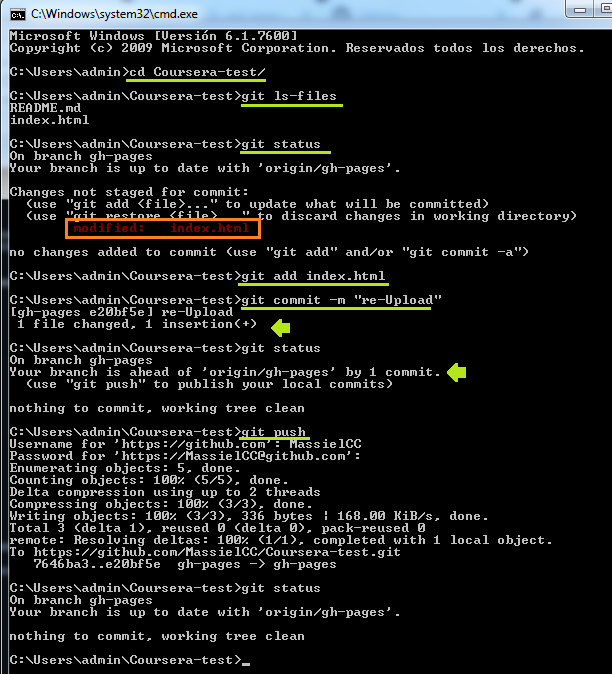

Coursera: lesson 1
Fast class to learn how to use Git
Git related notes
- Open cmd: search on Windows panel
- cd [file name] -> seems to open files
- To see the documents inside a file, two code available so far
- dir -> go for directory, specific, size
- git ls-files -> a single list of files names
- git status -> basic code -> pretty useful, a modified doc will be red
- git add (file name)
- git commit -m "Name of the commit" -> prepare the doc to be uploaded, like a waiting room
- git status -> after commit is change to green text
- git push -> upload changes in GitHub account
- git config --global user.email "you@example.com"
- git config --global user.name "Your Name"
- git pull -> ?
Browser-sync notes
- I guess it not work while i don't open de CMD panel
- browser-sync start --server --directory --files "*" --> code required to open the browser-sync
- browser-sync start --server --directory --files "**/*" -->for additional subfolders
